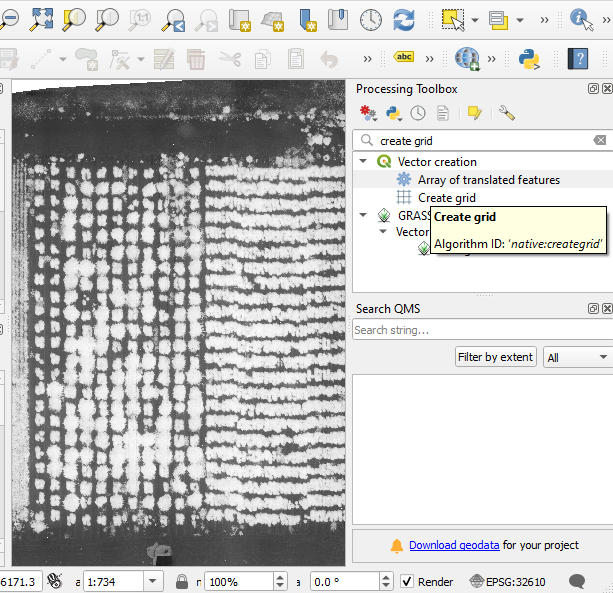

Making and editing a plot grid
Creating the grid
- Open the project and drag your raster files (orthomosaics, reflectance maps, digital surface models, etc) into the blank empty space in the middle, if not done previously.
- To make a grid, it is important to know the spacing of the cells you want to make. If you don’t already know this, you can use the Measure tool at the top of the QGIS window. I would recommend measuring across the full field, then dividing by the number of rows or columns you plan to have in that dimension.
- Are your plots at an angle, rather than perfectly north-south? To simplify making this grid, use the “Rotation” function at bottom right:
- If the Processing Toolbox is not displayed, click Processing → Toolbox
- In the Processing Toolbox, search “Create Grid” and click it.

- In the new window:
- Grid type: Select “Rectangle (Polygon)”
- Grid extent: Click the small downward facing arrow on the far right, then “Draw on Map Canvas”. Select the area you want to have covered using the mouse. It is okay for the grid to cover a bigger total area than you will need, you can always trim it later.
- In the next two boxes, choose your horizontal and vertical grid cell size.
- With “Vertical overlay” and “Horizontal overlay”, you can make the cells overlap (positive values) or have empty buffer space between them (negative values). Buffered space is helpful in some cases!
- In the “Grid” section, click the three dots at the far right, then choose “Save to File” and choose where your grid will be saved and a name.
- When you are done, click “Run”
- The default is for the polygons to be opaque, which makes it so you can’t see the files in lower layers. Let’s change that. In your Layers panel on the bottom left (not there? View → Panels → Layers), right click your polygon layer and choose “Properties”, click the colored area shown after the word “Color”, and in the next window, reduce the opacity to 25%-30% or so:
- Inspect the grid. Do you have extra cells? Are the cells at a different angle than your plots? Do the cells not match up properly? As long as the cells are the right size, these other issues can be fixed now. If the cells are clearly not the right size, recalculate the plot spacing and repeat the grid setup.
Editing the grid
- We will need to select cells that we want to edit. Selecting them makes them opaque again by default. To change that, click Project (at top left) → Properties; or Ctrl+Shift+P.
- Click “General” at the top left of the new window, then click the color shown after “selection color”. Adjust “opacity” (on the left, near the middle) to about 25%.
- Note that this only makes them transparent when they are selected (see below).
- To adjust our grid, we have to toggle editing on for it. Click the grid layer in the Layers panel at the bottom left, then click the pencil symbol near the top of the screen to toggle editing
- View → Toolbars, click the box for “Advanced digitizing toolbar”. This will give you a lot more options for editing this grid
- Select features you want to edit using the “Select features” tool, found near the top center: Note: you can individually select one feature, but typically I use the Shift key and select over many with the cursor to select multiple polygons, dragging a box over many polygons at once.
- It is normal to have extra cells in your grid. If so, left click and drag a box over the unwanted cells using the mouse to select them. Then click “delete” on your keyboard.
- Use the editing functions at the top left. I use “move” and “rotate” extensively:
- Try both these tools out. Use the select feature to select some or all your cells, then try rotating them and moving them. Ultimately, the goal is to have everything aligned nicely with the actual plots or areas of interest in your field.
- Important: When you are happy with your grid, first save it using the save symbol and then toggle off editing with the pencil symbol .